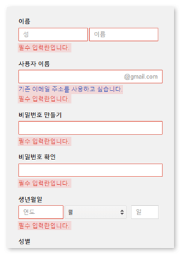
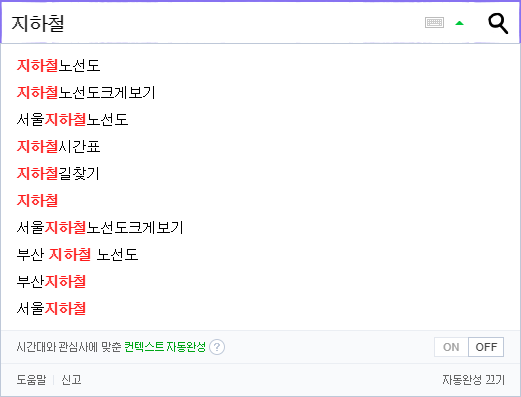
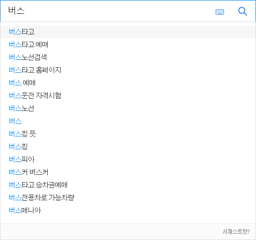
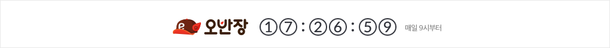

Live Region
페이지가 로드 되지 않고 사용자 포커스가 다른 곳에 있을 때 컨텐츠 내용이 동적으로 업데이트되는 영역으로 Live Region의 사용 예로는 주식 시세, 채팅, 에러, 타이머, 검색창 텍스트 자동 완성 등이 있습니다.
라이브 영역은 사용자 포커스가 다른 곳에 존재할 때에도 컨텐츠가 업데이트 되기 때문에 보조기술을 이용하는 사용자에게는 동적으로 업데이트되는 내용을 인식하기 어렵습니다.
Live Region WAI-ARIA의 사용은 보조기술 사용자에게도 동적으로 업데이트되는 내용을 동일하게 제공하는 역할을 합니다.
WAI-ARIA 역할(Roles), 속성(Properties) 및 상태(States)
-
- role="alert"
- 사용자의 작업을 방해하지 않고 간략하고 중요한 메시지를 표시하는 요소입니다.
동적으로 렌더링 된 Alert은 대부분의 보조 기술에서 자동으로 사용자에게 메시지를 알리고 일부 운영체제에서는 경고음을 울릴 수 있습니다.
NOTICE :- 자동으로 사라지는 Alert을 디자인하지 않는 것이 중요합니다. 너무 빨리 사라지는 경고는 WCAG 2.0 / 2.2.3 항목을 충족시키지 못할 수 있습니다.
- Alert으로 사용자에게 빈번한 중단을 주지 않아야 합니다. Alert으로 인한 빈번한 중단은 시각 및 인지 장애를 가진 사람들의 유용성을 저해하여 WCAG 2.0 / 2.2.4의 요구 사항을 충족시키지 못하게 합니다.
- 사용자가 Alert을 닫을 것을 요구해서는 안됩니다. - 인터렉티브 Alert은 포커스가 이동할 필요가 없기 때문에 콘텐츠 작업자는 닫아야 하는 Alert을 사용해야 할 경우 작업자는 role="alertdialog"를 사용해야 합니다.
-
- aria-live
- 사용자가 페이지의 어느 부분을 탐색하는 것과는 상관없이 새롭게 업데이트된 정보를 사용자에게 즉시 알릴 수 있습니다.
[Values]-
off (default)
해당 영역을 사용자가 탐색하는 중이 아닐 경우 변경사항을 사용자에게 제공하지 않습니다.
-
assertive
사용자가 진행하던 작업을 중단하고 변경사항을 사용자에게 즉시 알리도록 하는 역할을 합니다.
페이지에 오류가 발생했을 경우나 사용자가 작업한 입력란이 업데이트 되는 경우와 같이 중요하거나 긴급하게 알려야 할 경우 사용하는 것을 권고합니다. -
polite
사용자가 진행하던 작업을 마치면 변경사항을 알리도록 하는 역할을 합니다.
중요하지만 긴급하지 않은 변경 사항일 경우에 적합합니다.
-
- aria-atomic
- 변경사항을 사용자에게 전달할 때 변경된 영역만 제공할지 변경된 영역 포함하여 전체 영역을 제공할지 여부를 나타냅니다.
[Values]-
false (default)
변경된 사항만 표시합니다.
'보통' 텍스트가 변경될때 변경된 텍스트만 불러줍니다.
<p role="alert" aria-live="polite" aria-atomic="false">비밀번호 안전성 : <span>보통</span></p>NVDA 음성출력 뷰어 예시)
경고 비밀번호 안전성 : 위험
보통 -
true
변경된 사항을 포함한 전체 영역을 표시합니다.
'보통' 텍스트가 변경될 경우 role="alert"이 선언된 태그 내 텍스트를 모두 읽어줍니다.
<p role="alert" aria-live="polite" aria-atomic="true">비밀번호 안전성 : <span>보통</span></p>NVDA 음성출력 뷰어 예시)
경고 비밀번호 안전성 : 위험
경고 비밀번호 안전성 : 보통
-
- aria-relevant
- 라이브 영역에서 컨텐츠가 추가, 제거 되는 등 의미 있는 변경 유형을 설정하는데 사용됩니다.
NOTICE :[Values]- 설정값을 한가지 이상 설정할 수 있습니다. (default : additions text)
- 텍스트 제거는 지정된 값 중 하나가 'removals' 또는 'all'일 경우 관련성이 있다고 간주되어야 합니다. 예를 들어 라이브 영역에서 텍스트가 'on'에서 'off'로 변경되는 경우, 텍스트 추가('off')는 사용되지만 텍스트 제거('on')는 사용되지 않습니다.
-
additions
요소 노드가 라이브 영역 DOM에 추가됩니다.
-
removals
텍스트 또는 요소가 라이브 영역 DOM에서 제거됩니다.
-
text
텍스트가 라이브 영역의 모든 자식요소에 추가됩니다.
-
all
"additions removals text"을 모두 사용한 것과 같습니다.
Live Region 사용 예시 컨텐츠
-
Form Alert
form alert은 무엇? 어떤 경우가 있는지?
example01 :: Google 회원가입 example02 :: Naver 회원가입 example03 :: Daum 회원가입
example03 :: Daum 회원가입
-
Search
search은 무엇? 어떤 경우가 있는지?
 -
Timer
search은 무엇? 어떤 경우가 있는지?
 -
Chatting
search은 무엇? 어떤 경우가 있는지?
마치며
생각했던 것, 고민한 것 등등
참고 사이트
- https://www.w3.org/TR/wai-aria-1.1/#alert
- https://www.w3.org/TR/wai-aria-1.1/#aria-live
- https://www.w3.org/TR/wai-aria-1.1/#aria-atomic
- https://developer.mozilla.org/en-US/docs/Web/Accessibility/ARIA/ARIA_Techniques/Using_the_alert_role
- https://developers.google.com/web/fundamentals/accessibility/semantics-aria/hiding-and-updating-content?hl=ko
- https://www.w3.org/TR/UNDERSTANDING-WCAG20/time-limits-no-exceptions.html
- https://www.w3.org/TR/UNDERSTANDING-WCAG20/time-limits-postponed.html